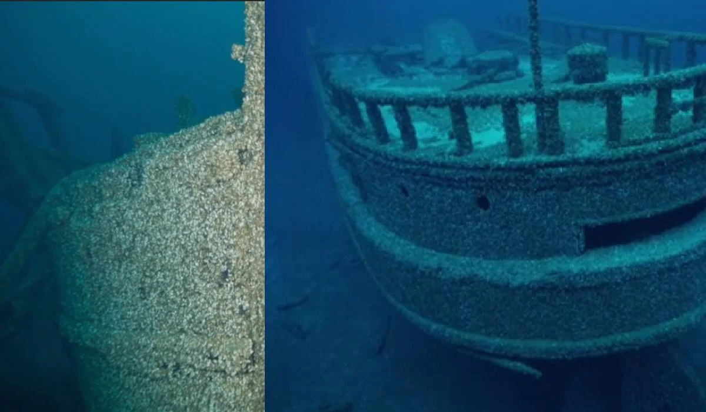

Подружжя, яке спеціалізується на підводній зйомці, під час роботи над документальним фільмом випадково зробило дивовижне відкриття. Пара знайшла затонулий корабель, який ніхто не бачив вже 128 років.
Як пише The Independent, у червні 2023 року подружжя – Івонн Дреберт і Зак Мельник – знімали свій документальний фільм All Too Clear. Під час роботи над ним пара знайшла дні озера поблизу півострова Брюс у провінції Онтаріо, Канада, затонуле судно "Африка".
Пара досліджувала водойму за допомогою дистанційно керованого транспортного засобу (ROV), який має систему камер з високою роздільню здатністю. Роботизована система камер помітила на глибині близько 80 метрів незвичайну нерівність, що виділялася на рівному дні озера. Це була маса мідій, що, як виявилося, прикріпилися до уламків судна.
- Що за корабель виявили документалісти?
Місцевий морський історик Патрік Фолкс і морський археолог Скарлетт Янусас дослідили корабель і сказали, що це, швидше за все, "Африка". Судно було побудоване в 1873 році, а в 1886 році перепрофільоване для перевезення вантажів .
4 жовтня 1895 року судно "Африка", навантажене вугіллям, відпливло з Огайо з екіпажем з 11 осіб і прямувало до Онтаріо, Канада. Корабель буксирував ще одну баржу під назвою The Severn, але жодна з них не досягла місця призначення. З того часу "Африку" та екіпаж судна більше ніхто не бачив.
|
 |